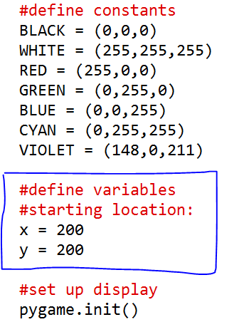

The Bouncing Ball
So now we have a template for creating a Pygame program. Let's open the template and save it as "bouncingball.py."The Ball
Your first mission is to create an ellipse that will act as a ball, moving around the screen and bouncing off the "walls." With the skills you've learned and with the help of Professor Craven's Pygame tutorial you should be able to create a scene that looks like this:How do you make something move in a graphics program? I'll tell you a secret: there's no such thing as movement in graphics. You simply create a new object in a different location and fool the viewer's mind into thinking it "moved." With the "display.update()" or "flip()" line we paint the background black, then draw an ellipse. Pygame is already doing that 60 times a second but since every new ball is in the same location, we don't notice. How do we change an ellipse's location? By replacing the numbers with variables:
If you run it now it'll tell you "x is not defined." You have to declare x and y up at the top of the file. I put it after the colors:

Now when you run the program you should see the ball quickly go off the screen. It's changing its position very quickly.
If you comment out the line of code that paints the background black every loop you'll see that Pygame is really just creating a bunch of new ellipses:
#screen.fill(BLACK)
The output should look like this now:Adding Some Bounce
Now what if we want our ball to bounce off the edges of the screen? It's as easy as telling it, "If you get to this x-value or this y-value, change your direction." But what is changing direction in our program? Our ball's y-value is going up and if it hits the bottom we want tye y-value to go down.Velocity
Velocity is the change in an object's position. In our program, the 2 and the 3 are changing the ball's position every loop. Those are the horizontal and vertical components of the ball's velocity. The velocity needs to change, so we have to replace it with a variable. We'll change those components to variables the same way we did for the ball's position.And we'll add the velocity where we declared x and y:
Run it and make sure it still works. The ball flies off the screen pretty quickly! You can slow down the speed at which Pygame refreshes the screen by adding a clock right after setting the caption:
clock = pygame.time.Clock()
And at the end of the while loop, right after updating the display, add this:Run it and see that things are slowed down now. Here's how we're going to make the ball "bounce." The walls are at x = 0, y = 0, x = 600, y = 600. With this block of code, which should go right before drawing the ellipse, we check if the location of the ball is at the wall (or beyond). If it is, change the velocity to its opposite.clock.tick(60)
#check if ball needs to bounce:
if x >= 600 or x <= 0: #if ball is at left or right wall
xvel = -xvel #change direction
if y >= 600 or y <= 0: #if ball is at top or bottom:
yvel = -yvel #change direction
If you're stuck, here's the full source.
Now let's check out Bouncing Ball Part 2
Remember, this a BETA application, so you may find some issues.
Problems or Bugs? Let Us Know. Sorry, this page isn't mobile-optimized!
Problems or Bugs? Let Us Know. Sorry, this page isn't mobile-optimized!